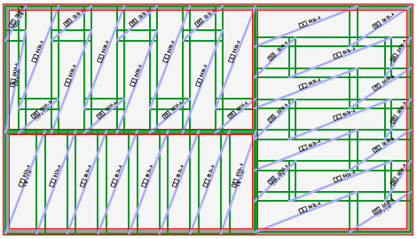
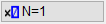

")

Alternativer Aufruf: mittlere Maustaste auf eine Diagonale, Mattentext oder ein anderes Mattenelement.
|
Achtung: Matten (eindimensionale Flächenmatten) und Formmatten (zweidimensionale Form) sind nicht kompatibel! |
|
Formmatten (zweidimensional) müssen mit den Funktionen im Formmatten-Menü [Formma] verlegt und bearbeitet werden. |

Verlegen von Matten desselben Formats in regelmäßigen, geradlinig berandeten Bereichen.

|
Hinweise: |
|
·Innerhalb eines Rechtecks verlegte Matten bilden eine Gruppe und können als solche editiert werden. ·Einzelne Matten werden grundsätzlich als Rechteck behandelt und verwaltet. ·Vorratsmatten - B500A und B500B der Baustahlgewebe GmbH - werden wie Lagermatten verlegt. Aktuelle Informationen erhalten Sie unter (www.baustahlgewebe.com). |

Funktionen |
Beschreibung |
|---|---|
|
Genaues Verlegen (voreingestellt). Verlegung innerhalb eines durch Zeichnungselemente definierten Verlegebereiches. |
|
Freies Verlegen. Bestimmung des Verlegebereiches durch Angabe von Länge und Breite. Platzierung an beliebiger Stelle. |
Aufbau bereits verlegter Listenmatten festlegen. Öffnet den Dialog Listenmatten-Editor. |
|
|
Ändern einer Mattenverlegung. |


Optionen |
Beschreibung |
|---|---|
 |
Angabe von Auflagertiefe (A= ) und Verlegefaktor (N= ). |